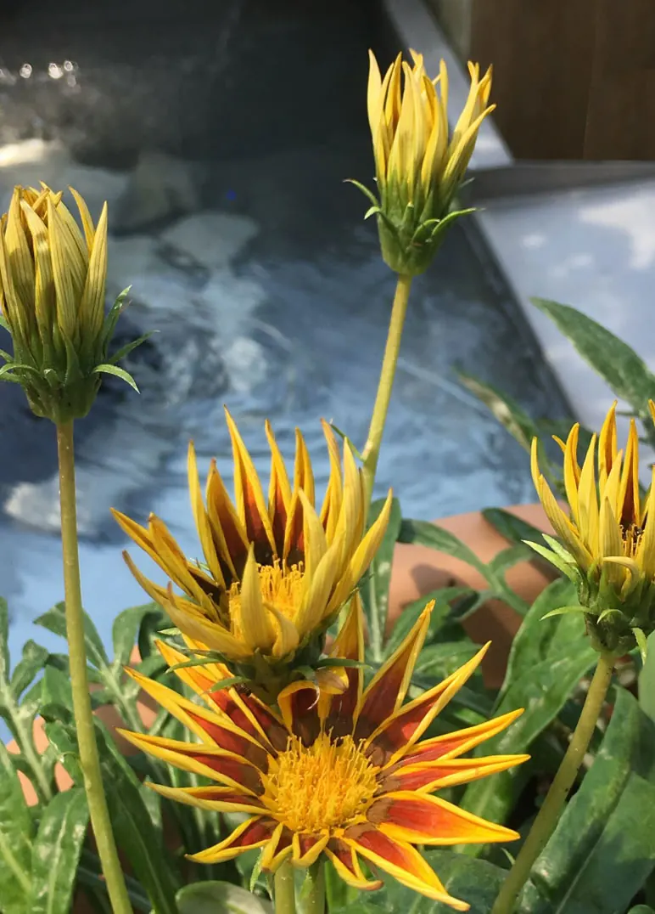
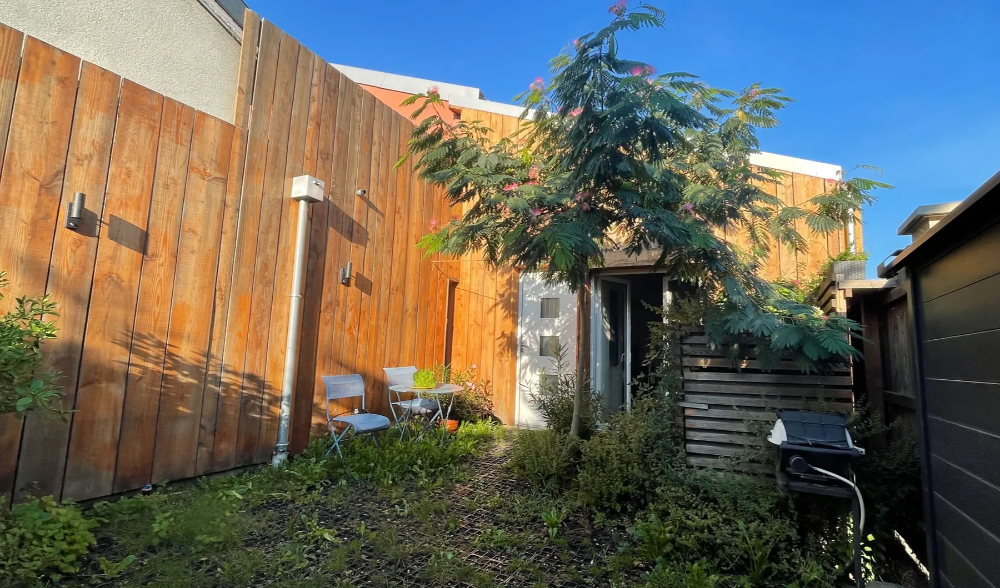

Le végétal
Des bâtiments quichangent de saison.
Principe 04 / 04
Façades · toits · cours · serres
Au centre de nos conceptions se trouve l’humain, mais aussi la végétation déjà présente ou à développer.

Le végétal
Au centre de nos conceptions se trouve l’humain, mais aussi la végétation déjà présente ou à développer.
Notre approche
Nos bâtiments deviennent des écosystèmes vivants, où nature et architecture se mêlent — de préférence sans installation high-tech, et idéalement en lien direct avec le sol.





Plantation intensive avec un espace racinaire aussi grand que possible, bacs dessinés sur mesure et espèces choisies pour donner aux appartements un extérieur proche de la nature.
Logements Caluire →
Sur un terrain presque entièrement imperméabilisé : des plantes qui ombragent les façades, des toits transformés en terrasses vertes avec treillis, des serres et une champignonnière d’agriculture urbaine.
grünboX-Vienne →
La dalle d’accès au garage devient un jardin praticable : la voiture électrique se gare sur un potager stabilisé d’herbes aromatiques, entouré de jardins verticaux.
Tiny House Urbaine →
L’immeuble s’ouvre par un jardin japonais, le toit du garage est végétalisé et les habitants partagent un jardin commun planté de figuiers.
Logements Vienne →Une barge devenue serre flottante en aquaponie, avec façade végétalisée.
Truite et BasilicAu sud de la maison au bord du lac, une cour intérieure plantée de cactus.
Maison JarretAu-dessus du dojo et des logements, une terrasse sur le toit avec beaucoup de verdure.
Judo Club Lyon 6eUne façade sud qui alterne murs végétalisés, perforés et vitrés.
École Condorcet
Pourquoi planter
Une ville plus fraîche,plus vivante,plus conviviale.
Par l’évapotranspiration, les plantes réduisent sensiblement la chaleur en ville et la température ressentie.
Une végétation bien implantée retient l’eau de pluie ou la restitue de manière différée, et réduit le risque d’inondation.
Un habitat pour de nombreuses espèces et des corridors écologiques préservés ou rétablis.
La présence du végétal réduit l’agressivité, favorise la convivialité et le rapport à la nature.
Palette végétale
Emplacement prévu pour présenter les espèces que l’architecte aime planter (grimpantes de façade, arbres de cour, aromatiques, plantes d’intérieur…), avec une photo et un mot sur chacune. Le site actuel ne cite que les figuiers, les cactus et les herbes aromatiques.